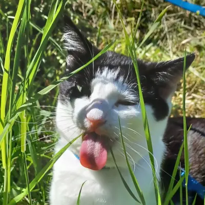

graefchen
I am an archaology and computer linguistic student with an bachelor in conputing science and am interesetind in creating video games, the small web, simple living and much much more...

I am an archaology and computer linguistic student with an bachelor in conputing science and am interesetind in creating video games, the small web, simple living and much much more...